Tutorial: Simulate stresses on a valve handle
In this tutorial, you learn how you can use a cylindrical constraint and a force load to simulate linear static stresses on a handle.
-
Open FE_valve_handle.asm.
Simulation models are delivered in the \Program Files\Siemens\Solid Edge 2023\Training\Simulation folder.
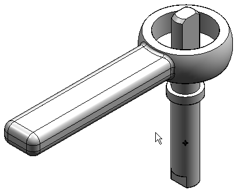
-
Create an analysis study.
-
Select Simulation tab→Study group→New Study.
-
Choose the Linear Static study type and Tetrahedral mesh type, and then click OK.
The Define command in the Geometry group is active.

You are prompted to select the occurrences (parts) that you want to include in the study.
-
Select the valve handle and valve shaft, and then click Accept.
Tip:To make a part available for selection, you can click it in the graphics window and it will activate automatically. You also can use the Home tab→Select group→Activate command
 on the ribbon.
on the ribbon.The new study is listed in the Simulation pane.
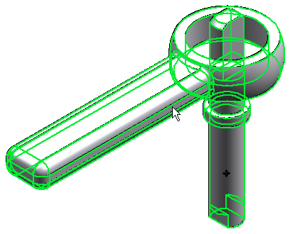
-
-
Define a force on the handle.
-
Select Simulation tab→Structural Loads group→Force.

-
Select the side face of the handle.
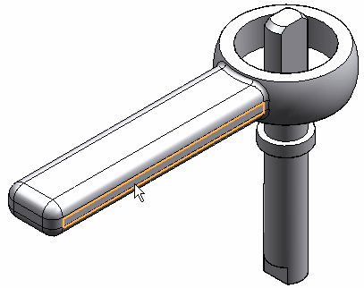
-
In the Value box, type 44482.216 mN. This is the equivalent of a 10 pound force, converted to milliNewtons.
-
On the Loads command bar, click Flip Direction
 to reverse the direction of the force.
to reverse the direction of the force.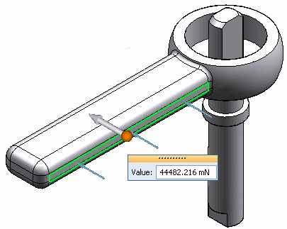
-
Right-click in space to accept; click to finish.
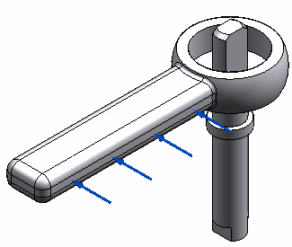
-
-
Add a cylindrical constraint to the shaft.
-
Select Simulation tab→Constraints group→Cylindrical
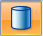
. -
Select the cylinder of valve_shaft. Right-click in space to accept it and click to finish.
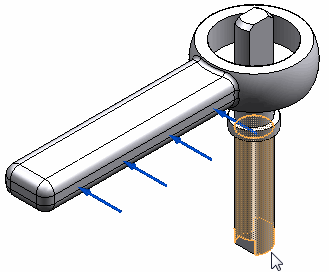
You can see the finished constraint on the model.
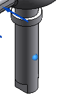
-
-
Define an assembly connector between the shaft and handle.
-
Select Simulation tab→Connectors group→Auto.
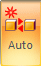
-
On the Auto command bar, do both of the following:
-
Select Glue from the Connector Type list.
-
Verify that One connector per component pair is selected.
-
-
Select the shaft and handle. You can do this by selecting them in the graphics window or by selecting the Select All button on the command bar.
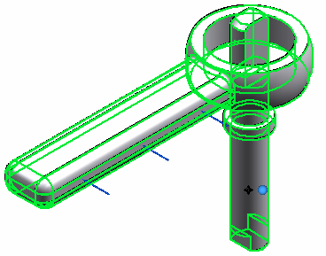
-
Click Accept on the command bar.
The Results dialog box lists the connector.
-
Click the Create Connectors button in the Results dialog box to apply it. Click in space to finish.
You can see the connector in the assembly model as well as in the Simulation pane.
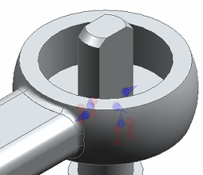
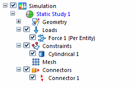
-
-
Mesh and solve the assembly.
-
Select the Mesh command, and in the Mesh dialog box, use the slider to define a subjective mesh size of 3.
-
Click the Mesh button.
The entire assembly is meshed.
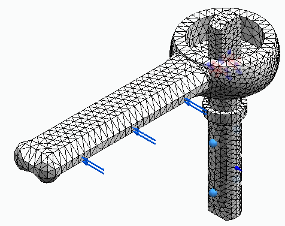
-
Select the Simulation tab→Solve group→Solve command.
After a few moments, the results are displayed in the Simulation Results environment.
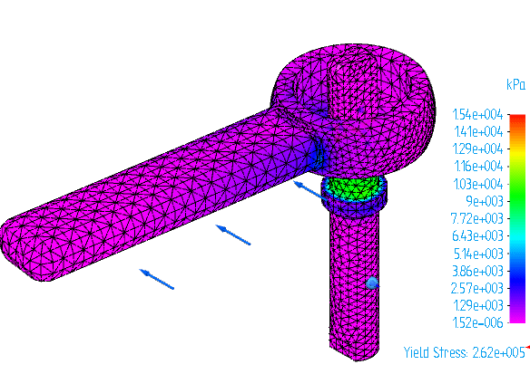
Note:Optionally, you can select the Mesh dialog box option, Mesh and Solve, to do both processes in one step. Be aware that the processing time increases.
-
-
View the area of maximum stress.
-
Turn off the loads, constraints, and connectors in the Simulation pane.
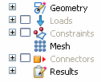
-
Rotate the view and zoom in so you can see the highest stress on the underside of the handle-shaft interface.
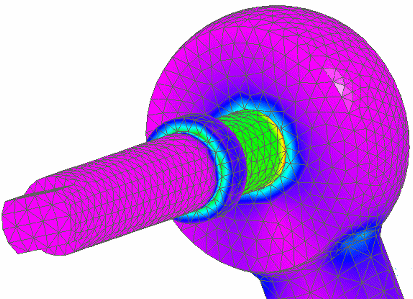
-
The Von Mises stress results are displayed on the deformed model. Change the display to show both the deformed and the undeformed model. Choose Home tab→Show group→Display Options
 , and then select the Undeformed Model check box.
, and then select the Undeformed Model check box.
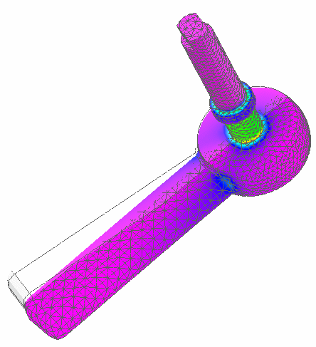
-
From the Color Bar tab→Show group, select the Max Marker check box.
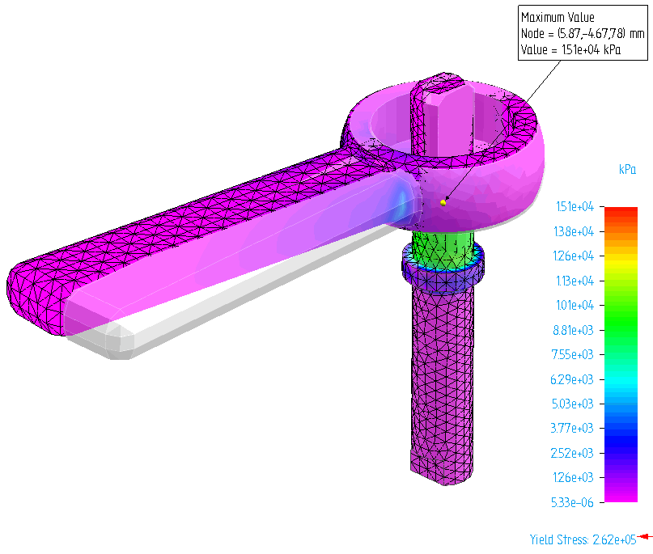
-
-
Close this file.